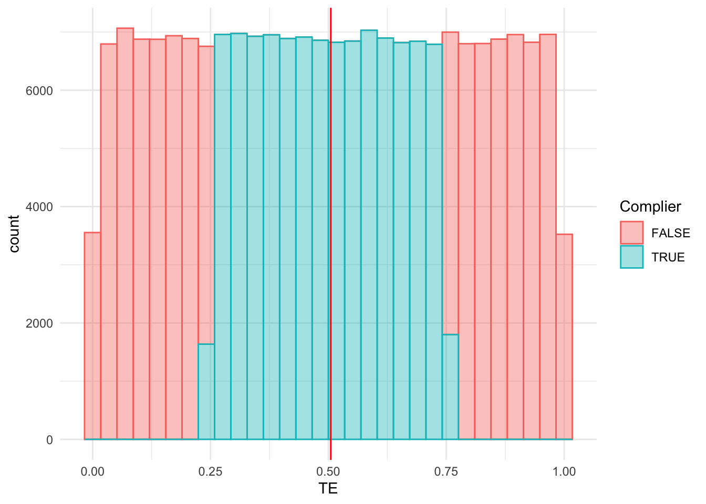
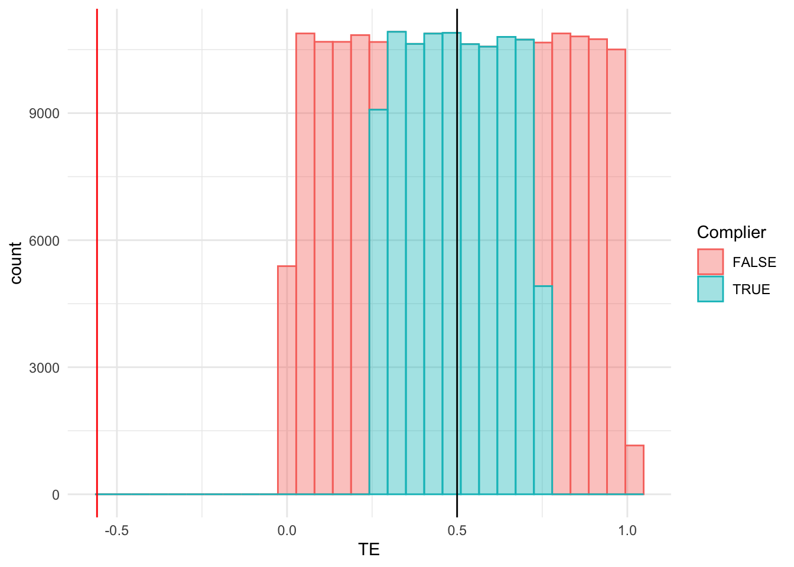

In class we talked about the montonicity condition for instrumental variables. Here we’re going to use simulation to explore the implications from violations of this condition. First, let’s reintroduce the potential outcomes model:
\[ Y_{n} = Y_{n,D} \]
where \(D\in\{0,1\}\) is the binary treatment of interest and \(Y_{n,1}-Y_{n,0}\) is the treatment effect on person \(n\). Sometimes we write as: \[ Y_{n} = \mu + \alpha D + \epsilon_{n,D} \] where you will recall that \(\alpha\) is the average treatment effect.
Assume now the following, to make sense of monotonicity:
There is an instrument \(Z\) that is randomly assigned and therefore independent of potential outcomes.
Potential outcomes and treatment are determined by some unobserved type, \(\omega\in\Omega\). This is not restrictive because \(\Omega\) can be arbitrarily large (e.g. the position and rotational speed of every single atom and electron in your body).
Let \(D_{Z}(\omega)\in\{0,1\}\) be the function that determines treatment assignment given the realization of the instrument \(Z\). For example, if \(Z\) is a randomly offered college subsidy, \(D_{Z}(\omega)\) determines whether someone of type \(\omega\) goes to college for each value of \(Z\).
The model is given by: \((Y_{1}(\omega), Y_{0}(\omega), D_{Z}(\omega))\)
We say that \(Z\) is monotonic if for two potential values of \(z\neq z'\), either:
In other words, the instrument uniformly pushes people either toward or away from the treatment.
Example 1: When \(Z\) is binary
When \(Z\) is binary, we have analyzed this setting before. It is identical to the setting where \(Z\) is a random offer of treatment and \(D\) indicates if the treatment is accepted.
As a first exercise, prove with your TA that:
Monotonicity is equivalent to assuming that we can partition \(\Omega\) into three categories: (1) Never-takers; (2) Always-takers; and (3) Compliers.
Violation of monotonicity would result in a fourth category that we called Defiers that move in the opposite direction to compliers.
Example 2: When \(Z\) is continuous
Going back to our applications in class with Judge stringency, let \(Z_{j}\in(0,1)\) be the stringency of judge \(j\), defined as the average probability of an imprisonment sentencing. Let \(I_{n}\in\{0,1\}\) indicate a prison sentence. Suppose that the first stage takes the form:
Next, prove with your TA that monotonicity implies that if a defendant is sentenced to prison by a judge with leniency \(z\), that they would also be sentenced to prison had they been assigned to a judge with leniency \(z'<z\).
Estimation
Example 1
Recall that when \(Z\) is binary, the two-stage least squares estimand is:
Review with your TA the fact that instrument monotonicity implies that \(\alpha\) is equal to the average treatment effect among the compliers, otherwise known as the Local Average Treatment Effect.
Example 2
We’ll use a simulation to explore what happens when \(Z\) is continuous, as in the judge IV setting.
First, let’s assume \(Z_{j}\) is distributed uniformly on the interval between 0.25 and 0.75.
Second, let’s assume that defendants can be characterized by some \(V\) such that: \[ I_{n} = \mathbf{1}\{Z_{j(n)} - V_{n}\geq 0\}\]
Higher levels of \(V_{n}\) represent higher levels of “innocence” in that these individuals are less likely to go to prison when assigned randomly to any one of the judges.
Third, let’s assume that the effect of prison on outcome \(Y\) is heterogeneous and depends on \(V\):
\[ Y = \mu + \alpha I_{n} + \beta I_{n}\times V + \eta,\ \eta \sim\mathcal{N}(0,\sigma^2_{\eta}) \]
Let’s write a simulation to see what TSLS converges to in a large sample.
library(tidyverse)
── Attaching core tidyverse packages ──────────────────────── tidyverse 2.0.0 ──
✔ dplyr 1.1.4 ✔ readr 2.1.5
✔ forcats 1.0.0 ✔ stringr 1.5.1
✔ ggplot2 3.5.0 ✔ tibble 3.2.1
✔ lubridate 1.9.3 ✔ tidyr 1.3.1
✔ purrr 1.0.2
── Conflicts ────────────────────────────────────────── tidyverse_conflicts() ──
✖ dplyr::filter() masks stats::filter()
✖ dplyr::lag() masks stats::lag()
ℹ Use the conflicted package (<http://conflicted.r-lib.org/>) to force all conflicts to become errors
# function to draw a dataset of size Nsim_judgeIV <-function(N,beta,alpha,sig_eta) { Z =runif(N,0.25,0.75) V =runif(N) I = (Z - V)>0 Y = alpha*I + beta * I * V +rnorm(N,0,sig_eta) TE = alpha + beta*V data <-data.frame(Y=Y,I=I,Z=Z,V=V,TE=TE) data$Complier <- data$V<0.75& data$V>0.25 data}# function to calculate the average tsls estimate over B trialsmonte_carlo_judgeIV <-function(B,N,beta,alpha,sig_eta) { tsls_sum =0for (b in1:B) { data <-sim_judgeIV(N,beta,alpha,sig_eta) tsls =cov(data$Y,data$Z) /cov(data$I,data$Z) tsls_sum = tsls_sum + tsls } tsls_sum / B}
Now let’s look at what the estimate is when prison has a positive effect on everybody (\(\alpha =0,\beta=1\))
monte_carlo_judgeIV(50,10000,1,0,0.4)
[1] 0.5072938
We get, once again, that TSLS converges to the average treatment effect among “compliers” which are individiuals with \(V\) between 0.25 and 0.75. A picture to visualize:
`stat_bin()` using `bins = 30`. Pick better value with `binwidth`.

The situation gets more complicated of course when the treatment effects are distributed around zero (\(\alpha=-0.5,\beta=1\)):
data =sim_judgeIV(200000,1,-0.5,0.4)tsls <-cov(data$Y,data$Z) /cov(data$I,data$Z)ggplot(data,aes(x=TE,fill=Complier,color=Complier)) +geom_histogram(alpha=0.4) +geom_vline(xintercept = tsls,color="red") +theme_minimal()
`stat_bin()` using `bins = 30`. Pick better value with `binwidth`.
so even though we know that treatment effects are quite large for people at either extreme, this is not capture by the LATE.
The fact that TSLS converges exactly to the average treatment effect here is by virtue of the symmetry in our assumptions. If we make the distribution of \(V\) asymmetric, we typically only recover a weighted average of the compliers:
sim_judgeIV2 <-function(N,beta,alpha,sig_eta) { Z =runif(N,0.25,0.75) V =pnorm(rnorm(N,1)) I = (Z - V)>0 Y = alpha*I + beta * I * V +rnorm(N,0,sig_eta) TE = alpha + beta*V data <-data.frame(Y=Y,I=I,Z=Z,V=V,TE=TE) data$Complier <- data$V<0.75& data$V>0.25 data}data =sim_judgeIV2(200000,2,0,0.4)tsls <-cov(data$Y,data$Z) /cov(data$I,data$Z)LATE <-mean(data$TE[data$Complier])ggplot(data,aes(x=TE,fill=Complier,color=Complier)) +geom_histogram(alpha=0.4) +geom_vline(xintercept = tsls,color="red") +theme_minimal() +geom_vline(xintercept = LATE,color="black")
`stat_bin()` using `bins = 30`. Pick better value with `binwidth`.
Estimation without Monotonicity
Finally, to see how things might go wrong without monotonicity let’s tweak the model such that there are two types \(\tau\in\{0,1\}\) of defendants and two types \((\tau\in\{0,1\})\) of judges. Judges are lenient on their own type but strict on their opposite type:
We let treatment effects be unaffected by the defendant’s type (same outcomes as before).
sim_judgeIV_nonmon <-function(N,beta,alpha,sig_eta) { tau =runif(N)<0.2#<- type (1) defendants are more common than type 0 tau_j =runif(N)<0.4#<- type (1) judges also more likely. Z =runif(N,0.25,0.75) same_type = tau==tau_j Ztilde = (0.75- Z)*same_type + Z*(1-same_type) V =runif(N) I = (Ztilde - V)>0 Y = alpha*I + beta * I * V +rnorm(N,0,sig_eta) TE = alpha + beta*V data <-data.frame(Y=Y,I=I,Z=Z,V=V,TE=TE) data$Complier <- data$V<0.75& data$V>0.25 data}data =sim_judgeIV_nonmon(200000,1,0,0.4)tsls <-cov(data$Y,data$Z) /cov(data$I,data$Z)LATE <-mean(data$TE[data$Complier])ggplot(data,aes(x=TE,fill=Complier,color=Complier)) +geom_histogram(alpha=0.4) +geom_vline(xintercept = tsls,color="red") +theme_minimal() +geom_vline(xintercept = LATE,color="black")
`stat_bin()` using `bins = 30`. Pick better value with `binwidth`.

The true treatment effects have the same distribution as before, but the TSLS converges to something negative and far away. Can you make sense of this?